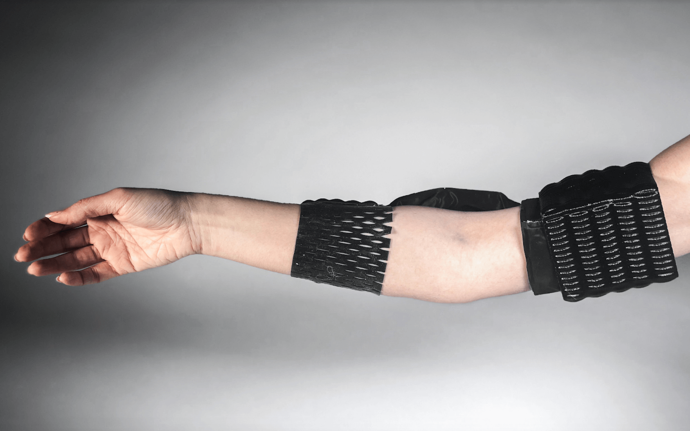
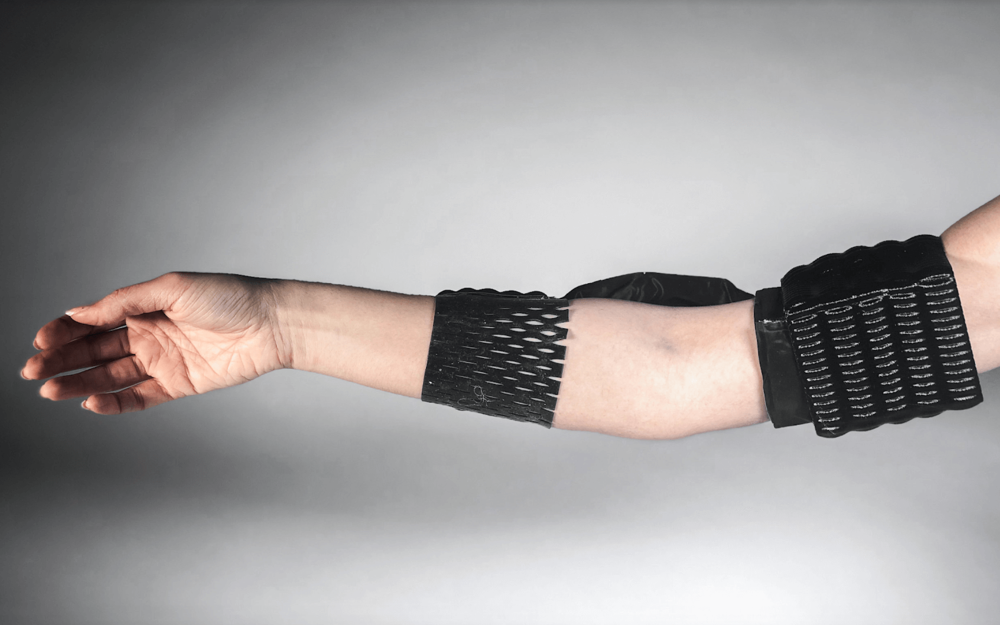

A wearable that allows you to communicate through body language.
New Media C203 Project

New Media C203 Project
Context
For this class project, I worked with Aura Barrera, Lili Dai, Elnaz Ta, and Joshua Yuan.
Communication is essential, whether it’s through spoken language, text, or body language. For this project, our design goal was to make a wearable that bridges the gap between gestures and meaning, whether that’s for beneficial or sinister purposes.
Jester is a wearable that allows the wearer to communicate with other wearers through gestures such as crossed arms or arms down. Users can define mappings between gestures and meanings by repeatedly performing the gesture, which allows the Jester to train using machine learning.
Design Process
For our full paper on this project, please refer to this document.
Our vision for this wearable is that its gesture tracking functionality would be able to be used in many different contexts. Some ideas include physical therapy tracking or sending a friend multiple choice answers during a test. With this concept in mind, we began with low-fidelity prototypes on paper.
Then, we scanned, modeled, and printed the wearable.
Technological Concept
Using IMUs (Inertial Measurement Units), we can gather acceleration vectors in 3 directions, or what we refer to as “gravity vectors.” Integrating acceleration twice yields position, which sounds like a promising find, but with a closed loop system in reality, it is nearly impossible to prevent positional drift in a system of just IMUs.
Instead, we have to leverage these gravity vectors as best we can in order to classify certain gestures. So, we picked subtle gestures that would still be able to generate distinct gravity vectors when at their final positions.
With these gravity vectors, we can train a machine learning model to predict data points into one of these gestures.